How to use this guide
Read each section, work through the examples, then answer the original practice questions without looking. For chart problems, keep the FAA testing supplement open beside this guide: the real exam uses its figures. The FAA Airman Certification Standards, or ACS, defines the material that can be tested.
| ACS area | Approximate share | Priorities |
|---|---|---|
| I. Regulations | 15–25% | Operating limits, certification, people, Remote ID |
| II. Airspace | 15–25% | Charts, authorizations, restrictions, hazards |
| III. Weather | 11–16% | METAR, TAF, weather hazards |
| IV. Loading and performance | 7–11% | Weight, balance, density altitude, load factor |
| V. Operations | 35–45% | Airports, emergencies, judgment, physiology, maintenance |
The FAA describes these as approximate ranges; actual questions vary. Initial test: 60 multiple-choice questions, two hours, 70% to pass. See FAA ACS 10B and the testing matrix.
Suggested seven-day plan: Day 1 regulations; day 2 airspace; day 3 sectional exercises; day 4 weather; day 5 loading and operations; day 6 practice questions and weak areas; day 7 a timed practice session and certificate steps. Repeat difficult sections as needed.
The rules that govern your flight
Part 107 is a set of rules for small unmanned aircraft operations, including many business and other nonrecreational flights. A remote pilot in command (RPIC) is directly responsible for and the final authority over the operation. Someone without a certificate may manipulate the controls under the RPIC’s direct supervision, provided the RPIC can immediately take direct control.
Eligibility, aircraft, and documentation
- For a certificate: be at least 16; read, speak, write, and understand English, subject to FAA exceptions; be physically and mentally capable of safe flight; satisfy knowledge and TSA vetting requirements.
- A small unmanned aircraft, including payload, must weigh less than 55 lb at takeoff for ordinary Part 107 operations. The aircraft must be in a condition for safe operation.
- Part 107 aircraft must be registered individually, even those under 0.55 lb. Mark the registration number on the aircraft and keep proof available. Registration is currently $5 per aircraft for three years; check the FAA site for changes.
- Have your remote pilot certificate and photo identification readily accessible when operating. Show required documents to authorized officials on request. Complete recurrent knowledge training within the preceding 24 calendar months to remain eligible to operate as RPIC.
Numbers to know
| Item | Basic Part 107 rule |
|---|---|
| Altitude | At or below 400 ft above ground level (AGL), or within a 400-ft radius of a structure and no more than 400 ft above its immediate uppermost limit. Other restrictions and authorizations still apply. |
| Speed | Groundspeed no greater than 100 mph, approximately 87 knots. |
| Visibility | At least 3 statute miles as observed from the control station. |
| Cloud clearance | At least 500 ft below and 2,000 ft horizontally from clouds. |
| Line of sight | RPIC, person manipulating controls, and visual observer, if used, must be able to see the aircraft throughout as required by §107.31; unaided vision except corrective lenses. A monitor or binoculars cannot substitute for visual line of sight. |
| Alcohol | At least 8 hours after alcohol; no operation while under its influence, while using a drug affecting safety, or with blood alcohol concentration of 0.04% or greater. Longer abstinence may be needed. |
| Accident report | Report to the FAA within 10 calendar days if serious injury or any loss of consciousness occurs, or qualifying damage to property other than the drone exceeds $500 to repair or replace, subject to the rule’s total-loss provision. |
Night and civil twilight
Night operations may be conducted without a separate night waiver when the RPIC has the required updated knowledge test or training and the drone has operating anti-collision lighting visible for at least 3 statute miles, flashing sufficiently to avoid a collision. During civil twilight, the same anti-collision lighting requirement applies. In the contiguous U.S., civil twilight generally means the 30 minutes before sunrise and the 30 minutes after sunset; Alaska has a different definition. The RPIC may reduce the light’s intensity when needed for safety, but may not extinguish it. Navigation lights alone are not necessarily compliant anti-collision lighting. Controlled-airspace authorization is still required where applicable.
Remote ID
Most registered drones must meet Remote ID requirements: fly a standard Remote ID drone, attach a compliant broadcast module, or operate without Remote ID only within an FAA-recognized identification area (FRIA) under its rules. A broadcast-module aircraft generally must operate within visual line of sight. Check the drone and module’s FAA compliance status and current exceptions. Remote ID does not authorize airspace entry, operations over people, or flight beyond visual line of sight.
People, crowds, and moving vehicles
Unless everyone below is directly participating or under a covered structure or stationary vehicle providing reasonable protection, flight over people requires compliance with an applicable operational category or a waiver.
| Category | Core concept | Key limitation |
|---|---|---|
| 1 | At most 0.55 lb including everything attached; no exposed rotating parts that would lacerate skin. | Propeller guards and total weight matter. Sustained flight over an open-air assembly requires the applicable Remote ID conditions. |
| 2 | FAA-accepted means and declaration of compliance; impact injury severity limit equivalent to 11 ft-lb and no exposed rotating parts that would lacerate skin. | Check eligible model, labeling, instructions and modifications. Applicable Remote ID requirements govern sustained flight over assemblies. |
| 3 | Accepted compliance with a higher, 25 ft-lb impact threshold and no exposed rotating parts that would lacerate skin. | No operations over open-air assemblies; operations over people are confined to the conditions specified in §107.135, such as restricted-access sites or no sustained flight over people not protected by a covered structure or stationary vehicle. |
| 4 | Aircraft has an FAA airworthiness certificate under Part 21 and is operated within approved limitations, including required maintenance. | Consult the flight manual, §107.140 and Remote ID rules; operational limitations must permit flight over people. |
Being a small, lightweight consumer drone does not by itself make it eligible for Category 1: the weight limit includes guards and accessories, and the blade condition matters. For Category 1–3 operations over moving vehicles, the rules generally allow transit but not sustained flight over moving vehicles outside a closed or restricted-access site; read §107.145 for all conditions and Category 4 details. An assembly is a group from which people cannot readily move away, such as a packed concert crowd.
More rules that appear on tests
- Yield right of way: do not operate so close to another aircraft as to create a collision hazard; yield to all other aircraft, including crewed aircraft, airborne vehicles and launch/reentry vehicles.
- One pilot, one aircraft: a person may not serve as RPIC, manipulator, or visual observer for more than one unmanned aircraft at a time without applicable waiver.
- Moving vehicle: operation from a moving land or water vehicle is ordinarily allowed only over a sparsely populated area and when not transporting another person’s property for compensation or hire. Operation from a moving aircraft is prohibited absent applicable relief.
- Transporting property for compensation: the aircraft, payload, and attached equipment remain under 55 lb; the flight must stay within one state, within visual line of sight, and otherwise meet Part 107 or applicable waiver/authorization. Rules for other forms of delivery may require additional authority.
- Dangerous goods: do not carry hazardous material as defined by applicable hazardous materials regulations under Part 107.
- Waivers: the FAA may waive only specified provisions when the proposed operation can be conducted safely. An airspace authorization is different from an operational waiver. Neither is permission to ignore unrelated rules.
- Emergency: an RPIC may deviate from Part 107 only to the extent necessary in an in-flight emergency requiring immediate action; provide a written report if the FAA requests one.
- ADS-B Out/transponder: generally prohibited on Part 107 small UAS unless specifically authorized or otherwise excepted by regulation.
Primary references: 14 CFR Part 107, FAA operations over people, and FAA Remote ID.
Read the airspace before you fly
A sectional chart is a map of airspace and hazards. The exam may ask you to find a specific airport, read a boundary, identify a tower, or compare aircraft altitude with an airspace floor. Use the legend in the FAA testing supplement. For real operations, check current charts, NOTAMs, authorizations, and restrictions.
The airspace classes
| Class | General chart cue | Part 107 takeaway |
|---|---|---|
| B | Solid blue boundaries, stacked shelves around major airports; numbers like 100/40. | Prior FAA authorization required when operating inside its boundaries. |
| C | Solid magenta boundaries, typically core and shelf. | Prior authorization required inside; shelves have different floors. |
| D | Dashed blue boundary, typically a surface area around a towered airport. | Prior authorization required when active; check chart supplement and NOTAMs for hours and other applicable airspace. |
| E | Dashed magenta may mark E to surface; fuzzy magenta often marks E starting at 700 ft AGL; fuzzy blue commonly indicates 1,200 ft AGL. | Authorization required in Class E designated for an airport’s surface. Other E airspace does not trigger §107.41 merely because it is Class E. |
| G | Uncontrolled airspace; often below an E floor. | No §107.41 controlled-airspace authorization required solely due to G classification, but all other rules and restrictions still apply. |
| A | Generally 18,000 ft MSL to FL600 in the contiguous U.S. and Alaska, subject to charted jurisdiction. | Rarely relevant to normal drone altitude; authorization is required. |
FAA figure 2-1: Airspace profile
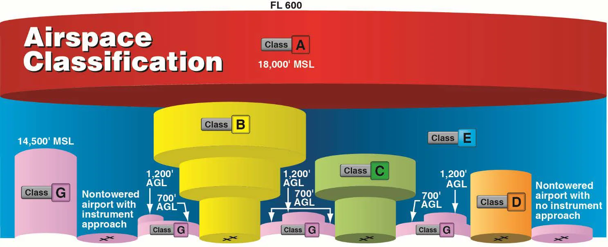
AGL, MSL, and chart altitudes
AGL is height above the ground immediately below. MSL is elevation referenced to mean sea level. An aircraft at 1,300 ft MSL over ground at 1,000 ft MSL is 300 ft AGL. The ground may rise beneath a drone, changing AGL even if MSL is unchanged.
100/40 indicates a ceiling of 10,000 ft MSL and a floor of 4,000 ft MSL. SFC means surface. A Class E floor shown as 700 ft AGL begins 700 ft above the local terrain, not at 700 ft MSL.Read a sectional in a repeatable order
- Find the exact location using landmarks, coordinates and the chart’s grid. The closest airport is not always the airport whose airspace covers your location.
- Identify all relevant boundaries, floor, ceiling, surface designation and times. Compare the altitude reference: MSL figures must be compared with MSL, while AGL varies with terrain.
- Check the nearest airport data block, airport operating hours and Chart Supplement. A control-tower frequency helps identify traffic but is not an authorization.
- Find towers, obstacles and chart notes; inspect the area for uncharted obstructions and wires. Then check current NOTAMs and temporary restrictions.
- Verify the requested operation and, if needed, obtain an authorization and comply with every condition.
FAA figure 11-2: Sectional chart and legend
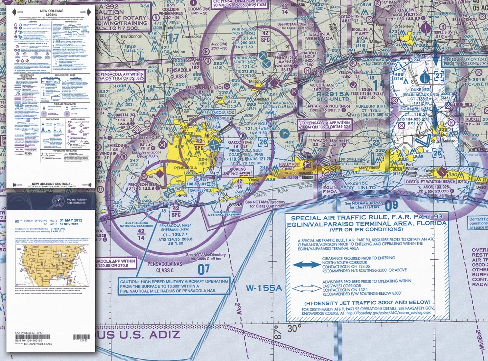
Controlled-airspace permission and grids
Use an FAA-approved LAANC provider or FAA DroneZone as applicable to request authorization before entering controlled airspace covered by §107.41. A UAS Facility Map grid is a planning aid: a displayed number is not itself permission to fly. A zero grid is not a permanent ban; it generally means an automatic authorization at that location is not available and further coordination may be needed. Follow the actual authorization, times, location, and conditions. An airport operator’s consent alone does not replace FAA airspace authorization.
Reading towers and obstacles
On sectional charts, obstacle heights typically appear as an elevation above mean sea level with the structure’s height above ground in parentheses. A ★ or other marking depends on the chart legend; learn lighted and unlighted obstacle symbols from the exact supplement rather than assuming the sketch below reproduces FAA symbology.
1549 (749). Its top is 1,549 ft MSL and its height above the local ground is 749 ft AGL. Approximate ground elevation: 1,549 − 749 = 800 ft MSL. A drone at 1,100 ft MSL above that ground is about 300 ft AGL. Guy wires can extend far beyond a tower and may be difficult to see. Not every obstacle is charted or lighted.Airport markings, symbols, and compass
- A blue airport symbol normally denotes an airport with an operating control tower; a magenta symbol denotes one without an operating control tower. Check the legend, Chart Supplement and hours; color is not a blanket airspace authorization.
- Runway designations approximate magnetic direction rounded to the nearest 10 degrees: runway 09 points roughly 090° magnetic, while its reciprocal 27 points approximately 270° magnetic.
- A compass rose has 360 degrees: north 000°/360°, east 090°, south 180°, west 270°. Heading is where the aircraft points; ground track is the path across the ground. Wind can cause them to differ.
- True north points toward the geographic pole; magnetic north follows Earth’s magnetic field. For true to magnetic, subtract east variation and add west variation. A magnetic compass may also have aircraft-specific deviation.
Latitude and longitude: latitude measures north/south of the equator; longitude measures east/west of the prime meridian. Each degree contains 60 minutes. At 42°30′ N, latitude is 42.5° north. One minute of latitude is approximately one nautical mile; longitude distance varies with latitude.
Magnetic variation, latitude and longitude
Isogonic lines connect places with equal magnetic variation; an agonic line marks zero variation. Variation changes with both place and time. Find the variation shown for the relevant chart and do not use a historical magnetic map to navigate. In chart exercises, one degree of latitude or longitude is divided into 60 minutes; each minute into 60 seconds. At western longitudes, longitude values increase as you move west.
FAA figure 11-3: Latitude and longitude
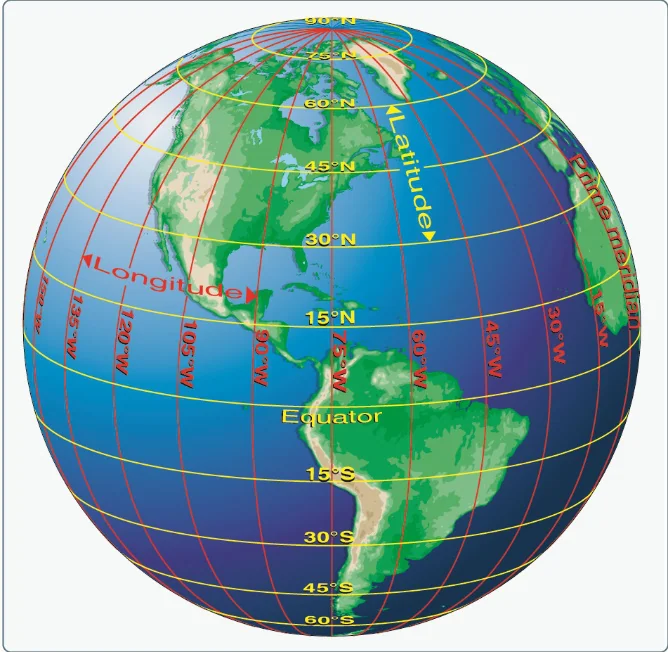
FAA figure 11-4: True and magnetic meridians
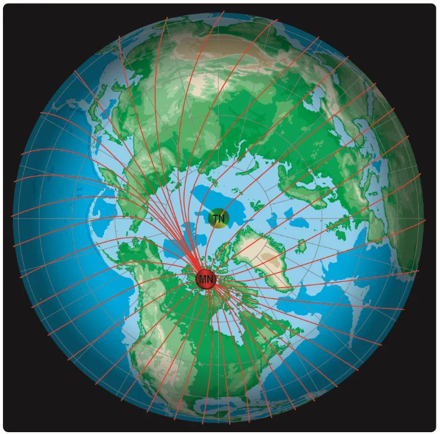
FAA figure 11-5: Isogonic and agonic lines
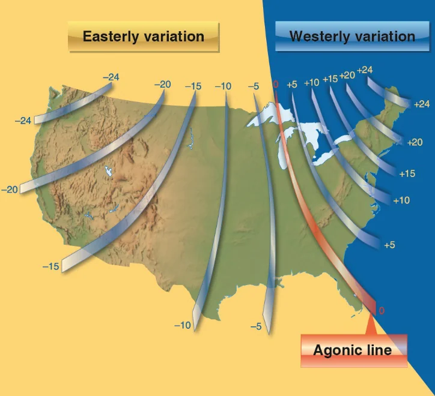
Sectional charts: learn to read one step by step
A sectional is a layered map. A test question usually asks about one location and one layer: airspace, obstacles, an airport, coordinates, or special-use airspace. Don’t try to memorize every symbol at once. Keep the FAA testing supplement’s legend open while you work through each example.
1. Locate the exact spot
Use the airport identifier, a compass bearing and distance, or latitude and longitude. North is generally up. A nautical mile (NM) is about 1.15 statute miles; a question may give a distance in SM while a chart scale gives NM, so check units before measuring.
- Find the named airport or prominent landmark. The small airport symbol marks the airport—not necessarily the intended flight site.
- Use the cardinal directions: NE is upper right; SE lower right; SW lower left; NW upper left. For an exact bearing, use the stated reference and a compass rose if provided.
- Read the location’s actual chart boundary. A flight two miles from an airport could lie inside, outside, or below controlled airspace depending on the published shape and shelf.
2. Identify the boundary, then the altitude
| Appearance in the test legend | What it usually means | How to reason through it |
|---|---|---|
| Solid blue lines | Class B boundary, often multiple shelves | Read the numbers for the particular ring containing your point. |
| Solid magenta lines | Class C boundary, often core and outer shelf | Check whether your point is in the center or outer shelf; floor can change. |
| Dashed blue | Class D surface area | Normally surface to the charted MSL ceiling when active. Check hours and other-times classification. |
| Dashed magenta | Class E surface area | Determine whether it is E designated to the surface for an airport; §107.41 authorization may apply. |
| Faded / feathered magenta | Class E transition area with 700-ft AGL floor on the shaded side | The faded side indicates the lower transition floor; identify the side and verify legend. |
| Faded / feathered blue | Commonly marks a change involving a 1,200-ft AGL Class E floor | Read which side of the vignette has which floor; the legend and any explicit numbers prevail. |
Memory aid: “Blue B, magenta C, dashed D, fuzzy E.” This helps recall common appearances; dashed magenta is also E, and there are exceptions. Always use the actual legend.
Example B — outer shelf: The floor is
12 = 1,200 ft MSL. Ground is 1,000 ft MSL, and the planned height is 300 ft AGL. Aircraft elevation = 1,000 + 300 = 1,300 ft MSL, which is above the shelf floor, so the aircraft is inside the shelf. If the flight were at 100 ft AGL, it would be at 1,100 ft MSL and below this particular shelf; check for any other surface airspace or restriction before concluding no authorization is needed.3. Decode numbers without mixing references
- Stacked numbers:
41/12= ceiling 4,100 ft MSL and floor 1,200 ft MSL.41/SFC= ceiling 4,100 ft MSL, floor at the surface. The slash is a separator, not a fraction to divide. - Dashed D ceiling: a boxed or bracketed
25usually means the ceiling is 2,500 ft MSL. A minus sign means “up to, but not including,” the stated altitude. Check the legend for the exact symbol. - Obstacles: a top elevation of
1,549with(749)below generally means 1,549 ft MSL and 749 ft above the local ground. Subtract for ground elevation. An obstacle may be lit or unlit; use the legend and do not assume all wires or towers are shown. - Maximum elevation figure (MEF): large blue numbers within a quadrangle describe the highest known terrain or obstacle plus charting allowances, rounded as specified by the FAA. An illustrative
3with a smaller2means 3,200 ft MSL—not an airspace floor or a permission to fly there.
4. Read an airport information block
Find the airport name and identifier first, then look at the data around it. Typical entries can include airport elevation in feet MSL, the length of the longest runway in hundreds of feet, lighting, radio frequencies and remarks. A small circled C identifies the CTAF frequency when shown. The FAA Chart Supplement supplies hours, full runway information, frequencies and other details. Because symbols and abbreviations differ, decode each block with the supplement legend instead of assuming every number is an altitude.
1180 near the airport’s elevation entry and 42 as the longest-runway entry. Those mean approximately 1,180 ft MSL airport elevation and 4,200 ft runway length, respectively. Their meaning comes from the position and legend, not from the digits alone.5. Determine AGL, MSL and a usable flight altitude
Use the local ground under the aircraft, not automatically the airport elevation. MSL = ground MSL + drone AGL. If a question supplies a tower’s MSL top and AGL height, subtract them to estimate ground at that tower; it does not guarantee the same ground elevation elsewhere.
6. Coordinates and variation
Latitude lines run horizontally on a north-up map and measure north/south. Longitude lines run generally vertically and measure east/west. Each degree is 60 minutes. On a particular figure, count the actual printed subdivisions: a small tick is not universally one minute. Mnemonic: “latitude is like ladder rungs,” while longitude lines run the long way from pole to pole.
For true-to-magnetic conversion, east is least; west is best: subtract east variation, add west variation. This mnemonic applies in that direction; reverse the arithmetic for magnetic to true. True 350° + 15° west = magnetic 005° after wrapping around 360°. Wind and compass deviation are separate corrections.
7. A complete chart question
45/20. Local ground is 1,850 ft MSL. You plan to fly at 250 ft AGL. Is this aircraft below the shelf floor?Step 1: outer magenta solid shelf → Class C. Step 2:
20 → 2,000 MSL floor. Step 3: 1,850 + 250 = 2,100 MSL. Answer: no; it is 100 ft into the shelf. Prior authorization is required; confirm other conditions. A flight at 100 ft AGL would be 1,950 MSL, below that shelf, but might still be subject to a different surface area or restriction.Use an authentic figure next: Open the FAA UAG sample questions and FAA-CT-8080-2H. Try the Savannah Class C shelf question in the sample and locate Figure 23, area 3. Read the printed shelf floor and its units directly; the shelf in that historical figure is labeled 41 over 13, so its floor is 1,300 feet MSL. Those historical test figures are for practice, not current flight planning.
Pictures from the guide you shared
These are the examples in the Propeller Aero reference, kept together so you can compare them. The airspace profile from that guide also appears above in the FAA airspace-profile figure. The site and flight-planning photos illustrate operations; they do not depict prohibited airspace or prove that a military operations area is active. The chart excerpts are historical examples, not current navigation data.
Open the five reference images
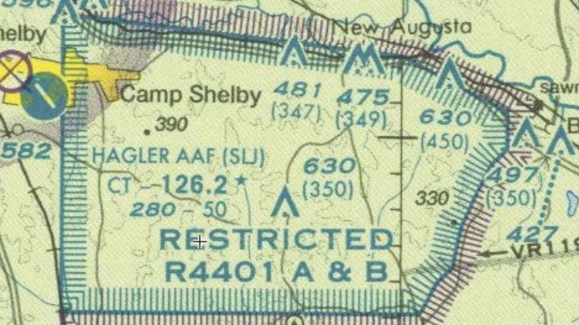
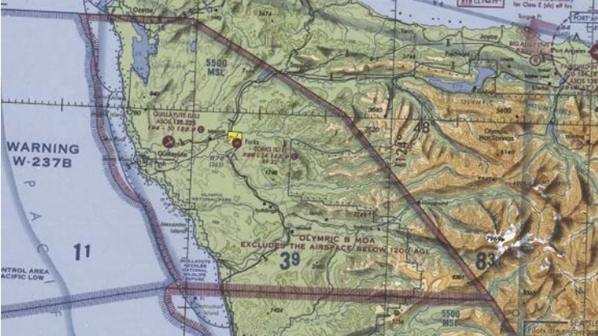
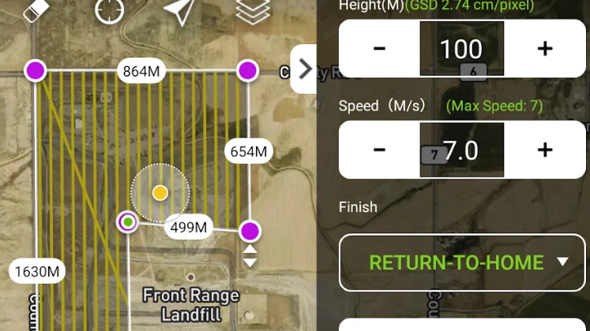
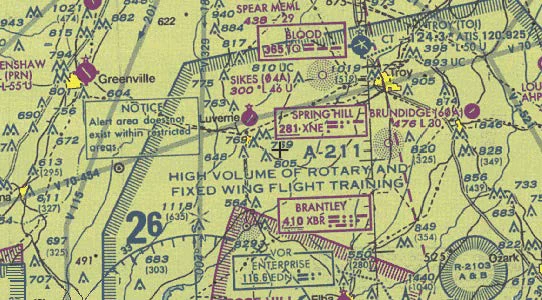
Other restrictions and real-world hazards
Consult current NOTAMs and TFRs: emergency response, wildfires, VIP movement, stadiums, security-sensitive locations, and other events may restrict flight even in Class G. Prohibited areas are off limits; restricted areas require checking status and applicable permission. Military operations areas, alert and warning areas may contain high-speed or unusual aircraft activity; consult the Chart Supplement and current information. Never interfere with emergency response. National parks, state parks, and local property rules may regulate takeoff, landing, or access separately from FAA airspace rules.
Identify wires, antennas, cranes, powerlines, wildlife, helicopter routes, thermal plumes, airports, glare and unlit objects. Avoid laser illumination of aircraft. At night use an observer when useful, maintain line of sight, and be cautious about depth perception and unlit wires.
Identify special-use airspace from the chart
A P prefix identifies a prohibited area; an R identifies a restricted area; an A identifies an alert area; and a W identifies a warning area. A MOA normally has a name. Use current notices, the controlling agency and published times and altitudes to determine status and restrictions. Military training routes marked IR or VR can carry low, fast aircraft; a route with four numerals generally has no segment above 1,500 ft AGL, while one with three numerals generally includes a segment above 1,500 ft AGL. A route’s actual published altitudes and activity still need to be checked.
FAA figure 2-2: Prohibited area
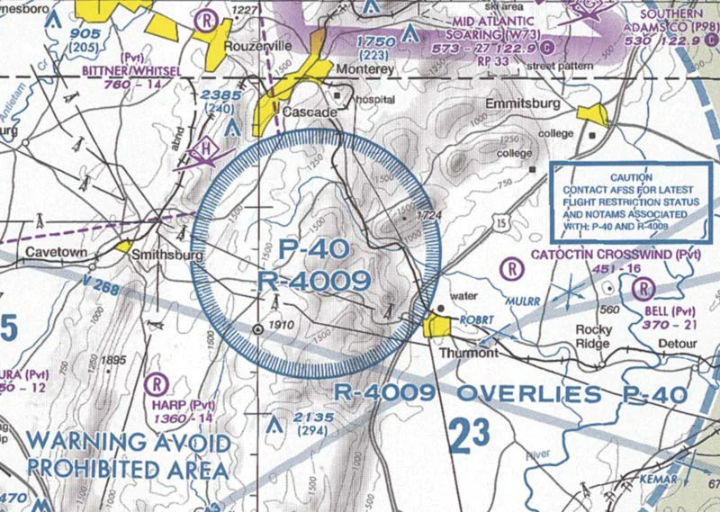
FAA figure 2-3: Restricted area
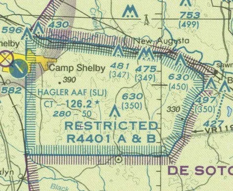
FAA figure 2-5: Military operations area
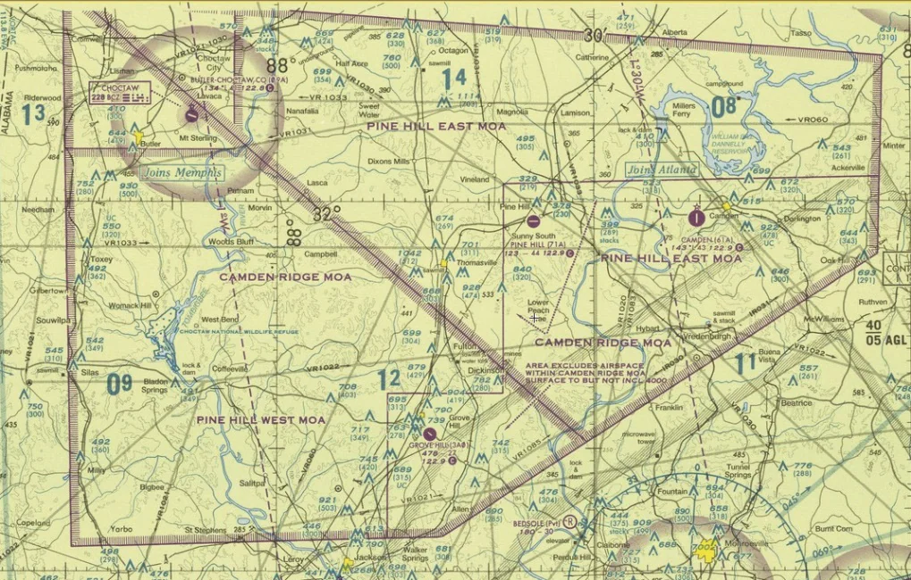
FAA figure 2-6: Alert area
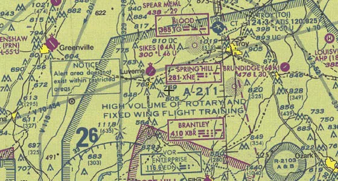
FAA figure 2-7: Military training route
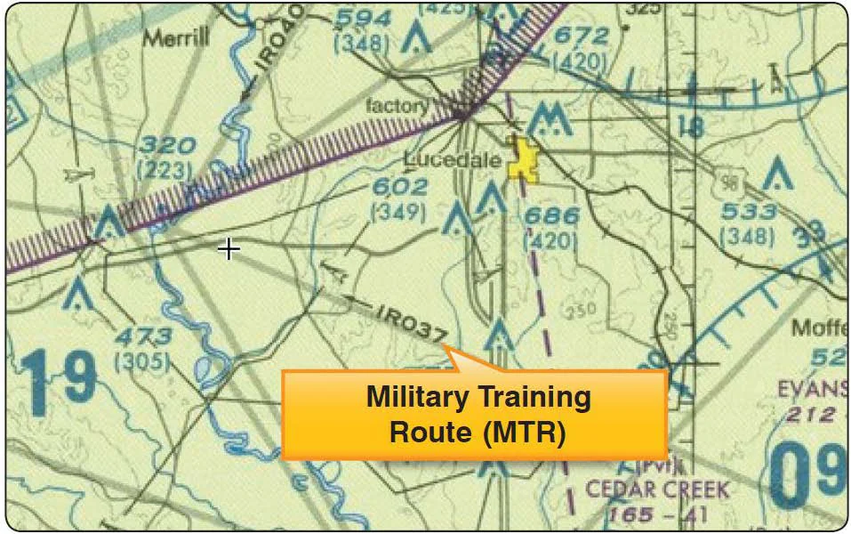
References: FAA Aeronautical Chart User’s Guide, FAA airspace authorizations, FAA test supplements.
Turn the forecast into a flight decision
Weather reports describe conditions at a station, not necessarily the exact air at the drone’s altitude or location. Consider forecasts, observations, trends and manufacturer limits together. Check Aviation Weather Center, ASOS/AWOS, radar, METARs, TAFs and NOTAMs.
METAR: an observation
METAR KALO 101753Z 22012G20KT 10SM SCT025 BKN050 18/12 A2992Read it: station KALO; 10th day at 17:53 UTC; wind from 220° true at 12 knots, gusting to 20; visibility 10 statute miles; scattered clouds at 2,500 ft AGL; broken clouds at 5,000 ft AGL; temperature 18°C, dew point 12°C; altimeter 29.92 inHg. This is an invented example.
| Code | Meaning | Why it matters |
|---|---|---|
| FEW / SCT / BKN / OVC | Few 1–2, scattered 3–4, broken 5–7, overcast 8 eighths of sky. | Lowest broken or overcast layer normally defines ceiling; obscuration with vertical visibility can also define it. |
| SM | Statute-mile visibility | Compare with minimum 3 SM at control station and assess actual conditions. |
| KT, G | Knots; gust | 12G20KT means 12 kt gusting 20 kt. Compare gusts with limits. |
| BR / FG / RA / SN / TS | Mist / fog / rain / snow / thunderstorm | Visibility, moisture, icing and storm hazards may preclude flight. |
| M05/M07 | Temperature −5°C; dew point −7°C | Near-freezing moisture and small spread can create icing or fog concerns. |
When temperature and dew point are close, saturation and fog or low clouds become more likely, depending on other conditions. Cloud heights in METARs/TAFs are generally AGL; verify context for other products.
TAF: a forecast
TAF KALO 101720Z 1018/1118 20010KT P6SM SCT030 FM110000 25015G25KT 4SM -RA BKN020Issued on the 10th at 17:20 UTC, valid from the 10th at 18:00 to the 11th at 18:00 UTC. Initially wind from 200° at 10 knots, visibility greater than 6 SM and scattered clouds at 3,000 ft.
FM110000 means from 00:00 UTC on the 11th: wind 250° at 15 gusting 25, 4 SM, light rain, broken clouds at 2,000 ft. TEMPO indicates temporary conditions; PROB indicates a stated probability group.More METAR and forecast codes
AUTO identifies an automated report, COR a corrected report, SPECI a special observation, and RMK begins remarks. VRB describes variable wind direction. Weather intensity may be -RA light rain, RA moderate rain, or +RA heavy rain; VCTS indicates thunderstorms in the vicinity. Do not confuse SM (statute miles) with nautical miles or KT (knots).
Surface observations are snapshots. A TAF is a forecast for the airport area, and an amended forecast can replace an earlier one. PIREPs describe conditions encountered by pilots at a time and place, while radar and satellite show different parts of the weather picture. For significant weather, check current convective SIGMETs and other warnings in addition to local observations. UTC or Zulu time uses the 24-hour clock; convert from local time using the correct daylight or standard-time offset for that date.
FAA figure 3-1: METAR weather descriptors
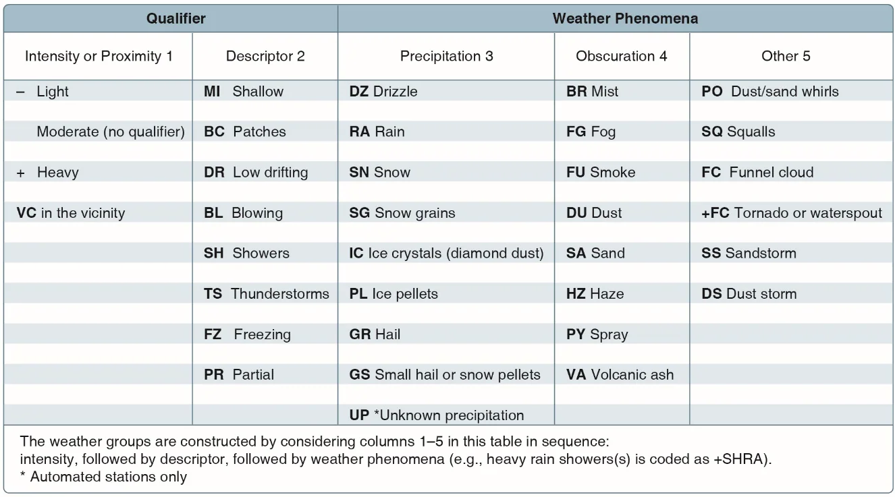
FAA figure 3-2: Sky cover contractions
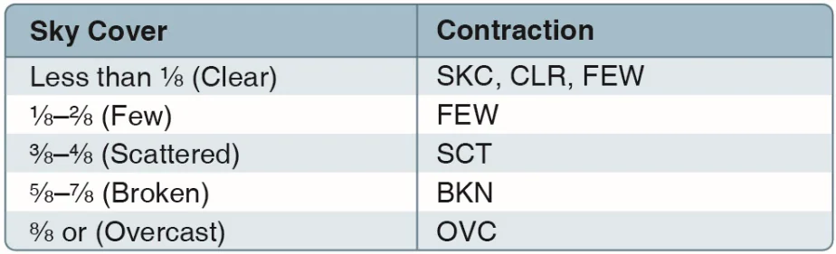
Weather maps: what you are actually looking at
Maps answer different questions. Start with what product is this, when was it issued, what time is it valid, and what does each symbol mean? A map of conditions at an airport is not automatically a forecast for the drone’s location, height or future flight time.
| Product | What it tells you | What to watch |
|---|---|---|
| METAR / ASOS / AWOS | Observed conditions near a reporting airport at a stated time | Observations can be old or differ from the launch site. SPECI reports a significant change. |
| TAF | Forecast conditions for the terminal area over stated hours | Check issuance, valid period and change groups; it is a forecast, not a guarantee. |
| Surface analysis | Analysis of pressure systems, frontal boundaries, observations and other features | Look at valid time, front movement, pressure spacing and local observations. |
| Surface prognostic / “prog” chart | Forecast positions of surface weather features at a future valid time | Check forecast valid time and compare it with updated forecasts and observations. |
| Radar | Radar returns associated with precipitation and other targets | Radar can miss low-level weather or lag; absence of an echo does not guarantee a dry or safe flight. |
| Satellite | Cloud patterns and other data depending on image type | It does not by itself tell you the exact cloud base or ground visibility. |
| GFA / graphical forecasts | Selectable observation and forecast layers for clouds, wind, precipitation and hazards | Confirm the layer, altitude, valid time, legend and whether it is observed or modeled. |
| PIREP | A pilot’s report of conditions encountered at a particular place, altitude and time | Useful context, not a measurement of your exact drone-level conditions. |
Step 1: Find highs, lows and pressure lines
H indicates high pressure and L indicates low pressure. Isobars connect locations with equal sea-level pressure, commonly in hectopascals or millibars. On a given map, closer isobars generally indicate a stronger horizontal pressure gradient and potentially stronger wind; terrain, friction and local conditions modify the actual wind. Don’t assume an H guarantees good weather or an L means the same hazard everywhere.
Step 2: Identify fronts and direction
Cold front: blue line with triangles; cold air advances. Warm front: red line with semicircles; warm air advances. Occluded: purple symbols on the same side. Stationary: alternating red and blue symbols on opposite sides. Mnemonic: “Cold has icy points; warm has rounded humps.” The map gives the boundary, not the complete local forecast.
Step 3: Read a wind barb
The shaft points from the station toward the direction the wind comes from. Count flags and feathers for speed: a triangular pennant = 50 kt, a full barb = 10 kt and a half barb = 5 kt. Add them; use the product’s legend. A shaft pointing west with two full feathers and one half feather depicts wind from the west at 25 kt, not wind going west.
Step 4: Interpret ceiling and visibility colors carefully
| Common GFA category | Ceiling AGL | and/or visibility |
|---|---|---|
| VFR / green | Above 3,000 ft or no ceiling | and above 5 SM |
| MVFR / blue | 1,000–3,000 ft | and/or 3–5 SM |
| IFR / red | 500 to below 1,000 ft | and/or 1 to below 3 SM |
| LIFR / magenta | Below 500 ft | and/or below 1 SM |
Use the worse of ceiling and visibility for the category, and verify the product legend. These are crewed-aviation weather categories, not a Part 107 authorization or a simple drone go/no-go label. For Part 107, visibility must be at least 3 SM at the control station and the aircraft must remain at least 500 ft below and 2,000 ft horizontally from clouds. Your launch location may differ from the airport report. A green dot does not resolve wind, thunderstorms or airspace.
Step 5: Work a METAR one group at a time
METAR KALO 111753Z 23012G22KT 4SM -RA SCT012 BKN025 14/12 A2988 RMK AO2METAR routine report · KALO station · 111753Z 11th at 17:53 UTC · 23012G22KT wind from 230° true at 12 kt, gust 22 · 4SM 4 statute miles visibility · -RA light rain · SCT012 scattered at 1,200 ft AGL · BKN025 broken at 2,500 ft AGL and the ceiling · 14/12 temperature/dew point °C · A2988 altimeter 29.88 inHg · RMK AO2 remarks, automated station type. This report is invented for instruction.
Practical decision: Four miles exceeds the minimum visibility, but gusts may exceed aircraft limits; rain, site conditions and cloud clearance still matter. If the local base is 2,500 ft, 300 ft AGL leaves 2,200 ft vertically below that base—but this does not prove local clouds, airspace or wind are safe.
Memory aid — W-V-W-C-T-A: after station and time, read Wind, Visibility, Weather, Clouds, Temperature/dew point, Altimeter. The report can include modifiers and additional groups.
Step 6: Work a TAF and convert UTC
A TAF starts with station and issuance time, then a validity period, then forecast groups. FM marks a new prevailing period from the stated time; TEMPO indicates temporarily expected fluctuations; PROB30 means a 30% probability during the indicated period, subject to the product’s coding rules.
TAF KALO 111720Z 1118/1218 22010KT P6SM SCT030 FM120000 28018G28KT 3SM -RA BKN015Issued on the 11th at 17:20 UTC; valid from the 11th at 18:00 UTC to the 12th at 18:00 UTC. Initially wind 220° at 10 kt and visibility greater than 6 SM. From 00:00 UTC on the 12th, wind 280° at 18 kt gusting 28, visibility 3 SM in light rain and broken clouds at 1,500 ft. In Central Standard Time, 00:00 UTC on the 12th is 6:00 p.m. on the 11th; in Central Daylight Time, it is 7:00 p.m. on the 11th. Always check the date and current offset.
Try it yourself: 18008KT 1 1/2SM OVC007 = wind from 180° true at 8 kt, visibility 1½ SM, overcast ceiling 700 ft AGL. Visibility is below the Part 107 minimum, even before evaluating other conditions.
Full weather-map workflow
- Locate your site; read current local METAR and actual on-scene conditions.
- Check the TAF covering your intended start and end times, including forecast changes.
- Inspect surface analysis for fronts, pressure centers and closely spaced isobars.
- Inspect radar, satellite and warnings for precipitation, convection, lightning and movement.
- Check GFA wind at relevant altitude, cloud and visibility layers and any SIGMETs or PIREPs; compare their valid times and altitude with the mission.
- Compare current and forecast gusts with aircraft limits and personal minimums; apply cloud and visibility requirements at the actual site.
- Make a decision with a margin, monitor changes and land if conditions deteriorate.
Sources: Aviation Weather Center GFA help, FAA Aviation Weather Handbook, and FAA front symbols.
Weather concepts
- Wind: the wind direction is where it comes from. A 180° wind blows from the south toward the north. Gusts, wind shear, channeling between buildings, ridges, and rotor turbulence behind obstacles can overwhelm a small drone.
- Stable air resists vertical movement and often produces smoother air, widespread layered clouds, and haze. Unstable air supports rising air, cumuliform clouds, turbulence and showers. Exceptions occur.
- Fronts: a cold front can bring abrupt wind changes, showers or thunderstorms; a warm front often brings widespread clouds and prolonged precipitation. Read the actual forecast rather than relying only on the front type.
- Thunderstorms: avoid them, including their gust fronts, lightning and microbursts. Do not treat 3 SM visibility as meaning storm flight is safe. Microbursts can cause violent downdrafts and wind shifts.
- Fog and low clouds: can obscure the aircraft or violate visibility and clearance rules. If a cloud base is 600 ft AGL, a drone at 200 ft AGL is only 400 ft below it—less than the required 500 ft.
- Density altitude: higher elevation, higher temperature, lower pressure and higher humidity reduce air density. The aircraft behaves as if operating at a higher altitude: less thrust margin, less climb capability and potentially shorter flight time. Respect the manufacturer’s limits.
- Temperature and icing: cold reduces battery performance and available power; moisture near freezing can cause ice, increased weight and degraded lift. Rain can exceed equipment ratings and obscure sensors.
Pressure, inversions, fronts and thunderstorms
Standard sea-level pressure is 29.92 inches of mercury and standard temperature is 15°C. The altimeter setting in a METAR is a pressure reference; pressure altitude and density altitude are different. Higher pressure altitude and warmer-than-standard temperatures generally increase density altitude. A temperature inversion means temperature increases with height through a layer; it can trap haze and pollutants and may create wind shear near the top.
Wind shear is a rapid change in wind direction or speed over a short distance. The downwind side of a ridge, building or tree line can contain eddies and downdrafts even when the upwind side appears calm. A cold front can generate cumuliform clouds and abrupt changes; a warm front often produces widespread layered cloud and precipitation. A stationary or occluded front can also cause prolonged or complex weather. These are patterns, not guarantees.
Thunderstorms commonly progress through cumulus (predominantly rising air), mature (updrafts and downdrafts, heavy rain and often the strongest hazards), and dissipating (downdrafts dominate) stages. Lightning, hail, turbulent outflow and microbursts can extend beyond the visible rain shaft. Keep well clear and reassess the entire operating area.
FAA figure 3-3: Mountain turbulence
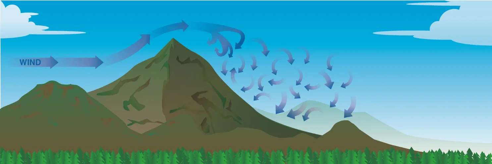
FAA figure 3-4: Thunderstorm life cycle
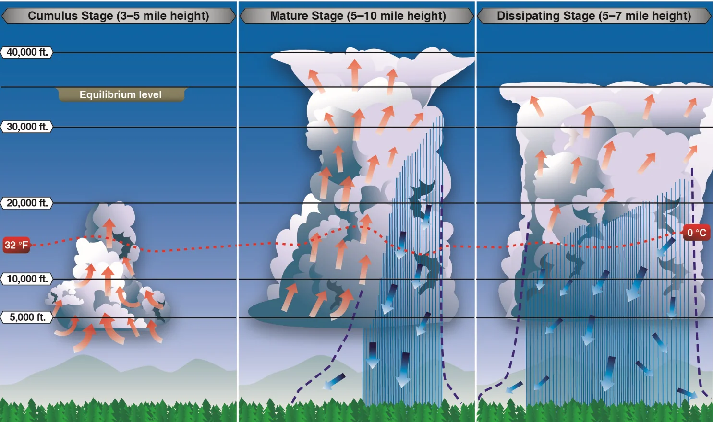
Weather reference: FAA Aeronautical Information Manual, weather.
Weight, balance, and load factor
Weight and center of gravity
Total takeoff weight includes aircraft, battery, camera, filters, propeller guards, lights, module and payload. Stay below both the applicable manufacturer maximum takeoff weight and the Part 107 less-than-55-lb limit. More weight generally demands more thrust, increases power use, shortens endurance and reduces control margins. A loose load can shift, strike propellers or change balance in flight.
The center of gravity (CG) is the effective balance point. A forward-heavy aircraft may require constant corrective control; an off-center payload may exceed a motor or stability limit. Check the manufacturer’s allowable range and secure the payload. In an FAA-style moment problem, moment = weight × arm, and CG = total moment ÷ total weight, using the same datum and units for all arms.
Load factor and turns
Load factor is lift divided by weight, expressed in “g.” In an ideal coordinated, level fixed-wing turn, the bank tilts lift; more total lift is needed to support weight. For that simplified model, n = 1 / cos(bank angle). This is a useful aviation exam concept, but it does not imply that a multirotor drone behaves exactly like a banked fixed-wing aircraft in every maneuver.
| Bank, level coordinated turn | Approximate load factor | Effective load on 10-lb aircraft |
|---|---|---|
| 0° | 1.00 g | 10 lb |
| 30° | 1.15 g | 11.5 lb |
| 45° | 1.41 g | 14.1 lb |
| 60° | 2.00 g | 20 lb |
A quadcopter tilts its thrust vector to move horizontally; as tilt increases, less thrust remains vertical unless total thrust increases. Heavy loads, gusts, low battery or high density altitude reduce available margin. Follow manufacturer guidance, fly conservatively and do not infer a multicopter’s exact safe bank angle from the fixed-wing table.
FAA figure 4-1: Forces in a banked turn
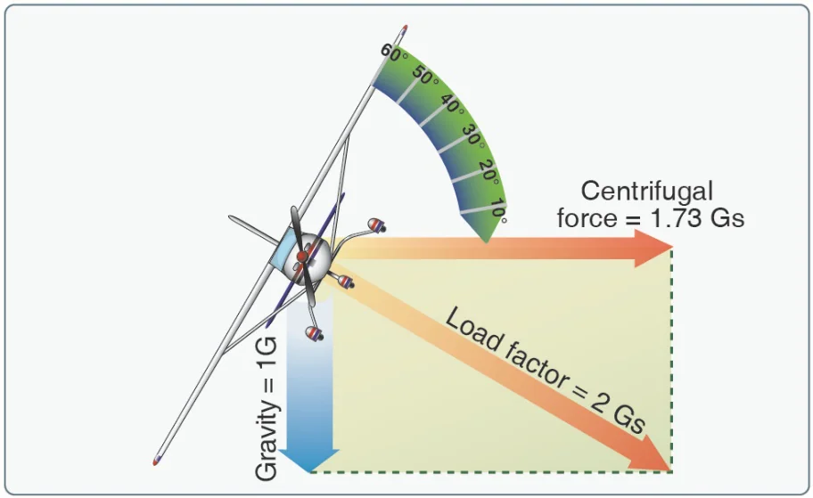
FAA figure 4-2: Bank angle and load factor
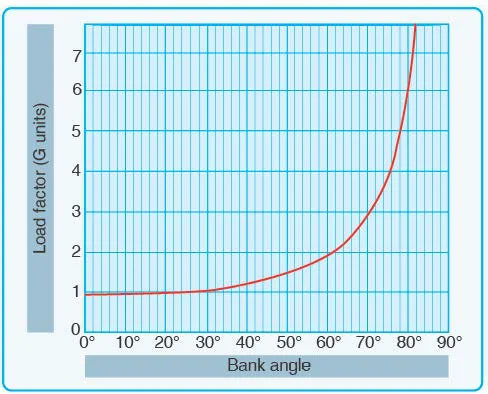
FAA figure 4-3: Load factor and stall speed
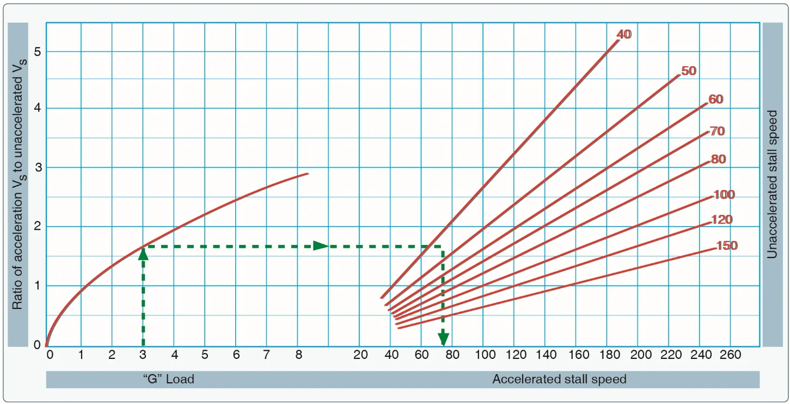
Fixed-wing stalls and flight forces
The four basic forces are lift, weight, thrust, and drag. A fixed-wing stall occurs when a wing exceeds its critical angle of attack, disrupting airflow and sharply reducing lift. A stall can occur at any airspeed or attitude; increased load factor raises stall speed. A multirotor is controlled differently, but its rotors can also lose performance in adverse conditions. This distinction matters on airplane-based exam questions.
Performance checklist
- Verify propellers, aircraft, battery, payload, and correct balance.
- Check pressure altitude, temperature, wind, terrain and manufacturer ceiling and wind limits.
- Plan the outbound and return legs. A tailwind outbound may become a strong headwind on return.
- Plan for an adequate landing reserve; battery percentage is an estimate and can drop quickly under load or cold conditions.
- Use conservative speed and turns; stop if the aircraft cannot hold position or respond normally.
Make the safe decision
Airport operations and traffic patterns
Aircraft near an airport may be low, fast, difficult to hear and focused on landing or takeoff. A standard traffic pattern uses upwind, crosswind, downwind, base, and final legs. Manned aircraft often make left turns unless otherwise indicated; check the Chart Supplement and published procedures. Remain clear of traffic and yield well before a conflict develops.
A towered airport has an operating control tower; a non-towered airport uses a common traffic advisory frequency (CTAF) for pilots’ self-announced positions. The chart may show frequencies, runway length, airport elevation, lighting, and communications information. Look up CTAF, tower hours and runway details in the FAA Chart Supplement. Runway markings are generally white; taxiway markings are generally yellow. Airport identification beacons often flash alternating green and white at civilian land airports, but learn the published legend for all airport types.
Radio awareness: listening to local aviation traffic can improve awareness but does not replace looking and listening or provide airspace authorization. Do not transmit on an aviation frequency without knowing the applicable requirements and procedures. Standard calls identify who is being called, who you are, your position, altitude if relevant, and intentions. Use plain language and avoid unnecessary transmission. Contact ATC only as instructed by your authorization or applicable procedures; use LAANC or the prescribed authorization process, not an assumed tower approval.
Airport data and radio vocabulary
The Chart Supplement U.S. lists details such as airport elevation, runways, frequencies, lighting, services and remarks; NOTAMs provide time-sensitive changes. At airports with ATIS, listen for the current airport information when relevant. A CTAF is used for pilot traffic advisories at an airport without an operating control tower; a UNICOM is an aeronautical advisory station, while MULTICOM can serve airports without a tower or UNICOM. Which frequency to monitor depends on the airport’s published information.
ICAO phonetics help listeners distinguish similar-sounding letters. Examples: A is Alfa, B Bravo, C Charlie, D Delta, M Mike, N November and Z Zulu. A readback repeats a clearance or instruction where applicable; be concise and avoid transmitting unless authorized and operationally appropriate.
FAA figure 7-1: Phonetic alphabet
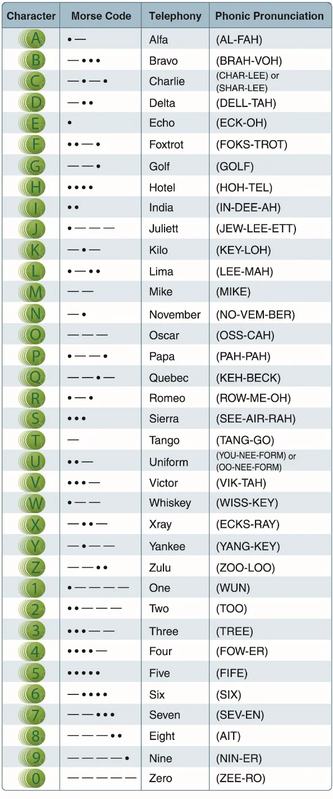
FAA figure 11-1: Chart Supplement example
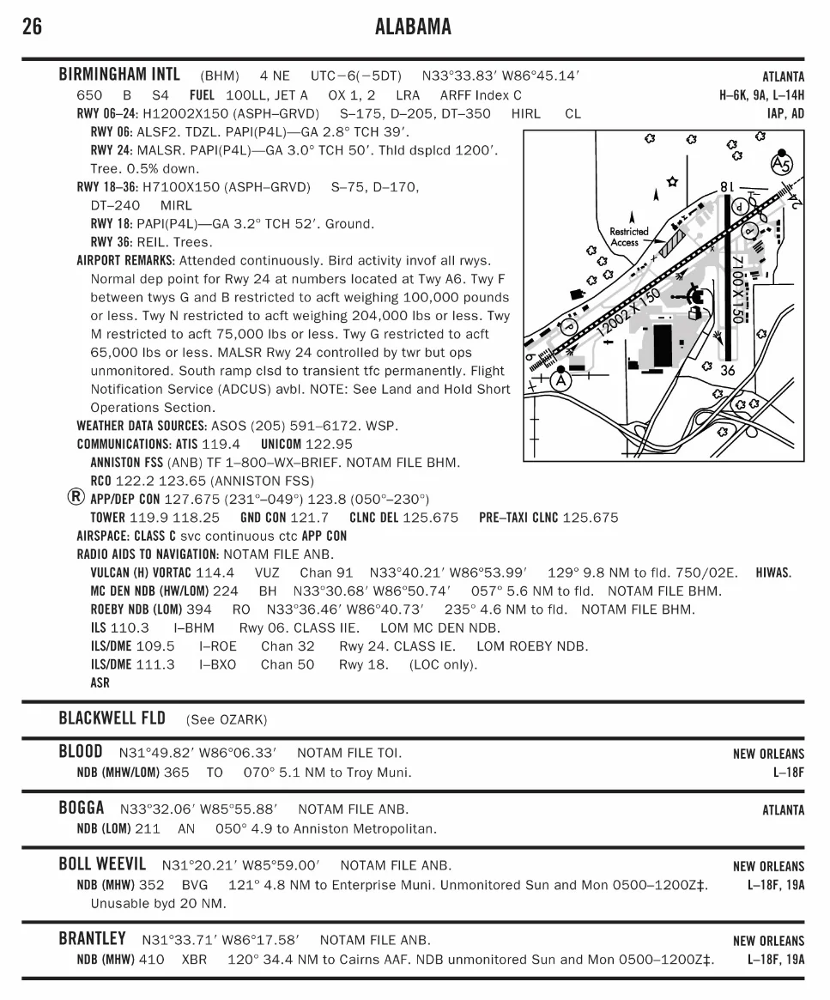
Before every launch
- Mission: define flight area, purpose, altitude, takeoff and landing areas, emergency sites and no-fly boundaries. Obtain property access where necessary.
- Pilot and crew: confirm certification, current knowledge, fitness, roles and communication signals. Brief a visual observer if using one.
- Airspace: check current charts, NOTAMs, temporary restrictions and FAA authorizations; verify altitude grid and authorization conditions.
- Weather and site: check local and forecast visibility, cloud clearance, wind and gusts, precipitation, temperature, surface obstacles, wires, people, wildlife and other aircraft.
- Aircraft: inspect propellers, motors, frame, battery security, contacts, antennas, controller, display, payload, firmware settings, Remote ID and anti-collision lighting when required. Check correct control response and battery charge.
- Emergency plan: confirm home point and return-to-home settings; plan lost-link, low-battery, flyaway, crew communication and safe landing. Keep separation from people and property.
Some steps—such as systematic maintenance records—are good practice rather than universal standalone legal mandates for every ordinary Part 107 drone. Category 4 or manufacturer requirements may be more specific.
Emergencies and battery safety
- Lost link: know beforehand whether the aircraft will hover, land or return home. Reestablish the link if possible; protect people and other aircraft. A return-to-home altitude set below a tree can turn an automated recovery into a crash.
- GPS degradation: positioning or automated return may become unreliable. Be ready for drift or manual/attitude mode according to the manufacturer’s procedures; land safely when needed.
- Low battery: return early, account for headwind and temperature, and land at the nearest safe area if necessary. Do not fly until automatic forced landing is your only option.
- Lithium batteries: inspect for swelling, damage, heat or leakage; follow manufacturer charging, storage and transportation instructions. Charge on a suitable surface using approved equipment; monitor charging and isolate damaged batteries. Follow local fire guidance and emergency procedures.
- People enter your area: stop, reposition or land when safe unless your operation meets the applicable legal conditions for flight over them.
Decision-making and crew resource management
CRM means using the available people, information, equipment, and time effectively. Give a visual observer a specific scan sector and plain-language warning: “Aircraft left, low.” Establish who will take action and how to stop the flight. The observer assists but does not replace the RPIC’s responsibility or remove visual-line-of-sight requirements.
Assess likelihood and severity of each hazard, choose a mitigation, and reassess after conditions change. Use 3P: Perceive, Process, Perform or DECIDE: Detect, Estimate, Choose, Identify, Do, Evaluate. Example: high winds near a street create a likely loss-of-control hazard with severe consequences; move the flight away from traffic or postpone rather than relying only on pilot skill.
| Hazardous attitude | Countermeasure |
|---|---|
| Anti-authority: “Rules are for other people.” | Follow the rules; they support safe flight. |
| Impulsivity: “Do something immediately.” | Pause and choose an appropriate action when time permits. |
| Invulnerability: “It won’t happen to me.” | Recognize that hazards can affect any pilot. |
| Macho: “I can handle it.” | Respect your limits and the aircraft’s limits. |
| Resignation: “There’s nothing I can do.” | Identify what remains under your control. |
Human factors and night vision
Use the IMSAFE check: Illness, Medication, Stress, Alcohol, Fatigue, Emotion/Eating. Fatigue slows reactions and degrades judgment; stress narrows attention. Some prescription, over-the-counter and recreational substances impair performance even if you do not feel impaired. The legal alcohol minimum is not a guarantee of fitness.
Night vision takes time to adapt and is reduced by bright light. Red light may help preserve adaptation but can make some chart colors hard to distinguish. Peripheral vision helps detect dim objects, but do not fixate; scan systematically. At night, a small point of light can be hard to judge for distance, direction or motion, and terrain or wires may be invisible.
Expand your risk assessment
PAVE organizes hazards into Pilot, Aircraft, enVironment and External pressures. Ask: Am I alert and trained? Is this aircraft equipped and serviceable? Are the airspace, weather, terrain and bystanders manageable? Is a client, schedule or desire for a shot pressuring me to fly?
A hazard is a condition that can cause harm; risk combines its likelihood and severity. A low-likelihood event can still be unacceptable if consequences are severe. Select a control, apply it, and monitor whether it works. Set personal minimums stricter than legal minimums when needed. Reassess in flight if weather, airspace, battery, traffic or the task changes.
Fatigue, dehydration, heat and glare can degrade attention even when no single factor seems dramatic. Workload can cause fixation: stop adding tasks, use crew assistance and land if needed. Scan the area in deliberate overlapping sectors, and pause long enough to detect small, distant aircraft.
FAA figure 9-2: Scanning techniques
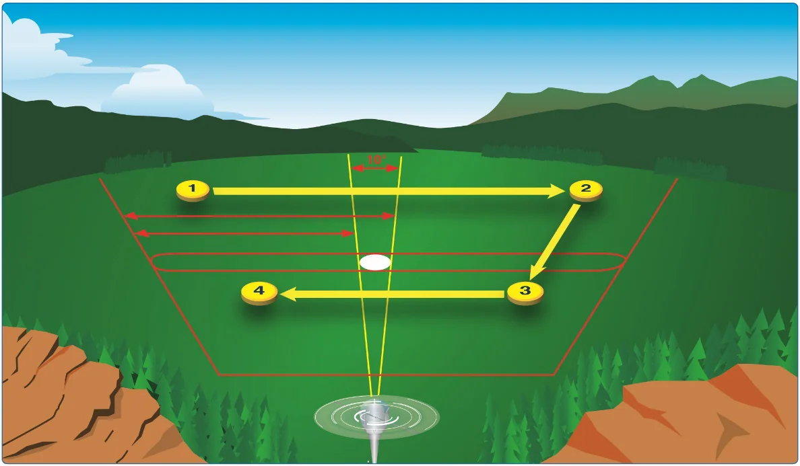
FAA figure 10-1: Risk management cycle
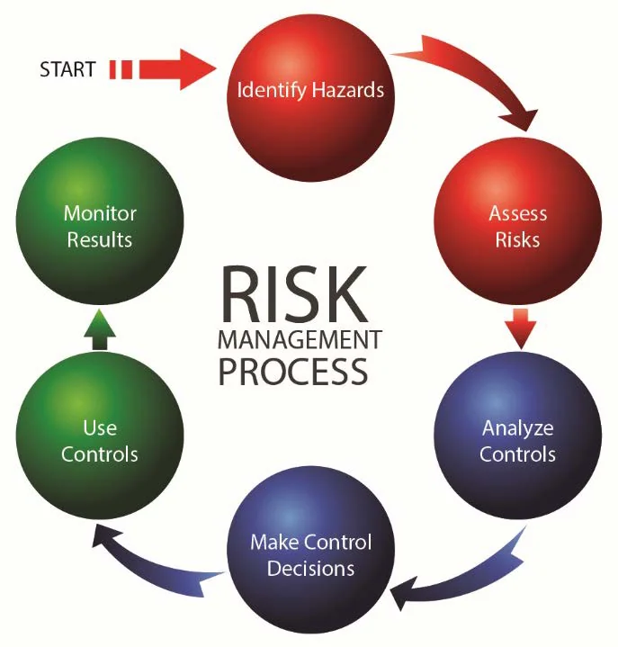
FAA figure 10-4: PAVE checklist example
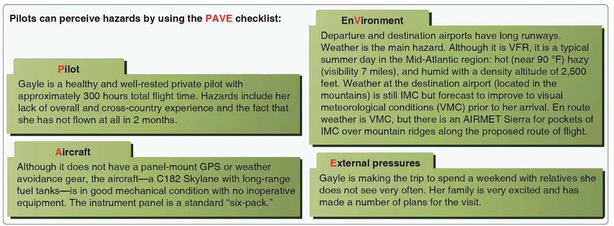
Maintenance and record keeping
Inspect before each flight and maintain the system per the manufacturer’s instructions. A non-airworthy component should be repaired or replaced before flight. The RPIC is responsible for determining the aircraft is in a safe condition. For a typical non-certificated small UAS, Part 107 does not generally require an aviation mechanic to perform routine maintenance; consult the manufacturer and any special operational, Category 4, or airworthiness requirements. Keep a practical log of flights, maintenance, batteries, defects and repairs so trends and recurring failures are visible.
References: FAA Advisory Circular 107-2A and Remote Pilot ACS.
Get your remote pilot certificate
- Check eligibility. You must be at least 16, meet the English and safe-operation requirements, and pass the required knowledge test. Existing qualifying Part 61 pilots with a current flight review have a separate training pathway; see the FAA.
- Create an IACRA account and obtain your FTN. Use your legal name exactly as it appears on your acceptable identification. Create an IACRA profile.
- Schedule the UAG exam. Use the FAA’s current certification page to locate an approved testing center and current scheduling instructions. The FAA lists the initial test at approximately $175; verify the current fee and retest charges before booking.
- Bring acceptable ID. Follow the current testing matrix for required photo, signature, date of birth, and residential-address documentation. Check the test center’s permitted materials. The applicable testing supplement is supplied at the test; use the FAA’s sample version to practice ahead of time.
- Pass and keep your test report. Score at least 70%—42 out of 60. The FAA reports ACS codes for missed areas; use them to review. If you do not pass, review the weak areas and observe the required 14-day waiting period before retesting; a remote-pilot instructor endorsement is not required by the ACS.
- Apply in IACRA. Start a pilot application for Remote Pilot and complete FAA Form 8710-13. Associate your knowledge test identification number, review, sign and submit. Test results may take up to 72 hours to appear.
- Wait for TSA processing and the FAA temporary certificate. Passing the exam by itself is not the certificate. Once issued, print or save the temporary certificate and carry it as required; the permanent certificate follows by mail. Do not act as RPIC until certificated.
- Register and prepare the drone. Register each Part 107 aircraft in FAA DroneZone, display its registration number, verify Remote ID compliance, and get any necessary airspace authorization.
- Maintain currency. Complete the appropriate free FAA online recurrent training within the preceding 24 calendar months and retain the completion record. For example, if completed May 15, 2026, recency runs through May 31, 2028. The certificate itself generally does not expire solely because 24 months pass; operating privileges depend on recency and other requirements.
Verify current procedures with the FAA certification steps, IACRA instructions, FAA fee information and registration guidance.
25 practice questions
These are original teaching questions, not actual FAA questions. Think of your answer before opening the explanation. For a realistic exam, also practice with the FAA’s official sample questions and figures in the test supplement.
01. What are the maximum ordinary Part 107 altitude and speed?
At or below 400 ft AGL, or within 400 ft of a structure and no more than 400 ft above its immediate top; no more than 100 mph groundspeed. Other limits and authorizations still apply.
02. Can you fly 700 ft AGL beside a 400-ft tower?
Potentially, if within a 400-ft radius of the tower and no higher than 400 ft above its immediate top. Check airspace authorization and all other limitations. The tower exception is not a blanket waiver.
03. What visibility and cloud clearance apply?
At least 3 statute miles as observed from the control station; at least 500 ft below and 2,000 ft horizontally from clouds.
04. Is an anti-collision light required 15 minutes after sunset?
Yes. Civil twilight requires operating anti-collision lighting visible for at least 3 statute miles and a sufficient flash rate; other night and twilight conditions also apply.
05. Who is responsible for the safety of the flight if another person operates the controls?
The RPIC remains directly responsible and has final authority. An uncertificated manipulator may fly under the RPIC’s direct supervision when the RPIC can immediately take direct control.
06. Can you fly above people because a drone weighs 249 grams?
Weight alone is insufficient. For Category 1, the complete takeoff configuration must weigh at most 0.55 lb, with no exposed rotating parts that would lacerate human skin; other applicable conditions must also be met.
07. You see a 100-ft LAANC grid. Can you fly there without requesting authorization?
No. The grid is a planning aid, not authorization. Obtain the required FAA authorization and follow its specific limits.
08. Does every kind of Class E airspace require Part 107 airspace authorization?
No. The relevant requirement includes Class E designated for the surface of an airport. Identify the exact airspace and any other restrictions.
09. What does a tower label of 1549 (749) mean?
The top is 1,549 ft MSL and the tower is 749 ft AGL. The ground at the tower is approximately 800 ft MSL.
10. Your drone is 1,200 ft MSL over terrain at 900 ft MSL. How high AGL?
1,200 − 900 = 300 ft AGL.
11. An airspace shelf says 80/30. What are its floor and ceiling?
The floor is 3,000 ft MSL and the ceiling is 8,000 ft MSL. This hypothetical notation uses hundreds of feet.
12. A true course is 120° with 12° west variation. What is the magnetic course?
Add west variation to convert true to magnetic: 120° + 12° = 132° magnetic. This does not include wind correction or compass deviation.
13. What magnetic direction is runway 27 approximately aligned with?
Approximately 270° magnetic. Runway numbers approximate magnetic heading divided by 10.
14. Decode 22012G20KT.
Wind from 220° true at 12 knots, gusting to 20 knots. A METAR wind direction is reported relative to true north.
15. In a METAR, what is the ceiling with SCT025 and BKN050?
The broken layer at 5,000 ft AGL is the ceiling. The scattered layer alone is not a ceiling.
16. A cloud base is 700 ft AGL. Can you fly at 300 ft AGL directly below it?
No. That is only 400 ft below the cloud; the minimum is 500 ft below. The cloud base itself may vary, so leave a safety margin.
17. Why does hot, high-altitude air reduce aircraft performance?
Less dense air reduces propeller and rotor thrust for a given operating condition, reducing performance margins and often endurance.
18. What load factor occurs in a 60° banked, coordinated level fixed-wing turn?
Approximately 2 g: 1 / cos 60° = 2. This is a fixed-wing idealization; a multirotor’s behavior depends on its thrust and control system.
19. An 8-lb drone has a 2-lb payload. If its maximum takeoff weight is 9 lb, can it fly?
No. Total is 10 lb, exceeding the manufacturer limit even though it is less than 55 lb.
20. A person suffers loss of consciousness after a drone accident. What is the FAA reporting deadline?
Report no later than 10 calendar days. Any loss of consciousness meets the Part 107 threshold; other reporting duties may also apply.
21. The drone alone is damaged by $1,000, and nobody is injured. Does that alone meet §107.9’s property threshold?
No. The Part 107 property threshold applies to property other than the small unmanned aircraft. Other circumstances or reporting rules may still apply.
22. The drone loses GPS while hovering. What is the best next step?
Expect possible drift and degraded automated functions, follow the aircraft’s emergency procedures, maintain control and land safely when appropriate.
23. Can a visual observer watch a monitor instead of maintaining the required ability to see the drone?
No. A camera view does not replace required unaided visual line of sight. Corrective lenses are allowed; the RPIC’s responsibilities remain.
24. When does an initial test pass allow you to act as RPIC?
After meeting the other requirements and receiving the temporary or permanent remote pilot certificate. Passing the knowledge test alone is not certificate issuance.
25. How often must remote pilot knowledge recency be updated?
Within the preceding 24 calendar months, using the applicable FAA recurrent training. The certificate and recency are different concepts.
20 worked knowledge checks
Choose an answer, then check the reasoning. These original questions are for practice and do not reproduce the live FAA exam.
The numbers and ideas to remember
| Remember | Meaning |
|---|---|
| 16 / 60 / 70 / 2 | Minimum certificate age 16; 60 questions; 70% passing; two hours. |
| <55 / 100 | Less than 55 lb total at takeoff; maximum 100 mph groundspeed. |
| 400 / 400 | Ordinary maximum 400 ft AGL, or eligible structure exception within 400 ft radius and at most 400 ft above top. |
| 3 / 500 / 2,000 | 3 SM visibility; 500 ft below and 2,000 ft horizontally from clouds. |
| 3 SM light | Required anti-collision light visibility for civil twilight and qualifying night operations. |
| 8 hours / 0.04% | Alcohol minimum waiting period and prohibited BAC threshold; never fly impaired. |
| 10 days / $500 | FAA accident report within 10 calendar days for qualifying injury/loss of consciousness or specified qualifying property damage over $500. |
| 24 calendar months | Maintain aeronautical knowledge recency. |
| MSL vs. AGL | Sea-level elevation versus height above the ground immediately below. |
| Authorization ≠ waiver | One allows a particular controlled-airspace operation; the other grants relief from specified rules under conditions. |
Go straight to the FAA
Sources reviewed November 11, 2026. Rules, fees, exam procedures, chart data, and aircraft compliance can change. Check these official sources again before the exam and before flying.
- Propeller Aero Part 107 Study Guide (2020) — illustrations and introductory explanations; verify older advice against current FAA sources.
- Remote Pilot Airman Certification Standards, FAA-S-ACS-10B — exam knowledge areas and weightings.
- 14 CFR Part 107 — current operational and certification rules.
- FAA Remote Pilot Study Guide — official background instruction.
- FAA UAG sample questions — sample questions with figure references.
- FAA testing supplements — select FAA-CT-8080-2H and practice interpreting its figures.
- FAA ACS list and testing matrix — verify the current versions and test details.
- Become a certificated remote pilot — eligibility, application and recurrent training.
- Operations over people and Remote ID.
- Airspace authorizations, LAANC, and Part 107 waivers.
- Aeronautical Chart User’s Guide and current VFR charts.
- Aviation Weather Center and FAA weather information.
- FAA drone registration and Advisory Circular 107-2A.
This independent educational guide is not affiliated with or endorsed by the FAA. It summarizes key material and does not replace the full ACS, current regulations, official chart supplement, or aircraft manual.